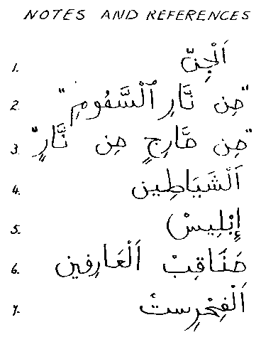

Une des caractéristiques les plus curieuses des adeptes des diverses religions est que, étant si dogmatiquement certain qu'au sein de leur petite foi particulières ils possèdent déjà toute la Vérité sur toutes les choses du Ciel et de la Terre, il n'arrive pratiquement jamais à aucun d'entre eux de regarder ailleurs et de découvrir ce que les adeptes d'autres religions pourraient savoir ou avoir découvert.
C'est indéniablement désolant, puisque l'étude de l'ensemble des grandes religions du monde - et notamment l'Islam - dévoilerait des éléments intéressants quant à la véritable nature de ce qu'on appelle le "phénomène ovni" et éliminerait rapidement la plupart de la fatuous "mythologie de l'ère spatiale" qui s'est déployée avec tant de profusion au cours de ces 3 dernières décennies.
L'Islam connait, en fait, l'existence de 3 espèces tout à fait distinctes d'être intelligents dans l'Univers, et peut de fait fournir des détails étonnamment précis sur leurs natures, rôles et activités.
La 1ère categorie est bien sûr celle des Anges ou Messagers (du grec Angelos ; en hébreu Malach ; en arabe Malak). Ce sont des êtres élevés créés de lumière.
La 3ème catégorie est celle des hommes, dont les corps ont été créés d'après le Qur'an d'argile, ou, en d'autres mots, puisqu'il s'agit de langue poétique, ayant des corps physiques assemblés des éléments minéraux et chimiques de notre tableau périodique -- le "corps planétaire", comme l'appelait Gurdjieff.
La 2ème catégorie, cependant, et celle qui nous concerne ici, est celle de ces êtres (créés avant l'homme) que l'on désigne collectivement en arabe comme Al-Jinn 1 bien qu'il y ait some dispute about it among Arab grammarians, most of their lexicologists seem to hold that the word derives - as Arabic words almost invariably do - from a verb-root, namely janna, "to hide or to conceal" - indeed a very fitting derivation for the name of these creatures.
Whereas the bodies of Angels are of light and the bodies of men are of the gross elements of the Earth, the bodies of Al-Jinn consist of what is variously translated as "essential fire",2 or "essential flame",3 or "smokeless fire", or "smokeless flame", and it is specifically stated in the Qur'an (Surah XV, 26 and 27) that they were created before mankind was. (Some scholars have speculated that these might be the "Pre-Adamic men" whose existence is hinted at here and there in the "Holy Bible.")
There has been much debate among modern students of Arabic as to precisely what these terms "min nari al-samumi" 2 and "min marijin min narin" 3 can conceivably mean in modern parlance, and some scholars have concluded that, in using these terms, the Prophet Muhammad (the Peace and Blessings of Allah be upon him) was here attempting to describe what Western occultists have tried to describe by such terms as ether, or maybe the so-called etheric or astral planes. (I have also seen it suggested that some sort of plasma is indicated.)
(Needless to say, such concepts as etheric plane and astral plane have no meaning for modern Science and, so far as I know, apart from Dirac, the physicists have abandoned their speculations regarding the existence of an ether.)
Wherever it is that the Jinns are thought of as being normally located, it seems highly likely that the source of many of them, at any rate, is not very distant from us, and some Muslim scholars who have become aware of the current Western research into the so called "UFO Phenomenon" and have reflected awhile upon it have concluded and I think correctly - that maybe the best way we can start to visualise these matters is by thinking of the Jinns as being very close indeed to us and yet at the same time somehow very far from us. In other words, on some other dimension, or in some other Space/Time framework, "right here", or maybe in a world of antimatter right here, or occupying as it were some other Universe that is here, behind Alice's mirror: "a mirror-universe on the other side of the Space-Time Continuum" as it has been neatly put by some investigators.
The Qur'an, however, is not clear on this, and admittedly it looks as though it is very possible that some of the Jinns could be fully physical and what we call extraterrestrials, while other species of them are of an altogether and finer sort of matter, corresponding to what various UFO investigators have tried to indicate by such terms as "ultraterrestrial" or "metaterrestrial".
In thinking about these ideas, we might bear in mind the theory of the Russian philosopher P. D. Ouspensky regarding the possible existence of other, more subtle, levels of matter on which the elements of the Periodic Table of our own chemical world are repeated - and, if I understand him aright, repeated more than once, on more than one level. The early writings of Dr. Meade Layne in the USA about the "Dense Etheric World" from which he maintained that the UFO entities and their craft originated should also be borne in mind. (His book The Coming of the Guardians, was published in 1958, and may prove one day to have been very important indeed. ) Certain of the benevolent Jinns may well be our "Guardians".
That there is some close affinity, or some link of destiny between Jinns and Mankind seems certain, for although the vast majority of the Jinns are devils, shaytans,4 nevertheless we are assured in the Qur'an that some among their many species are "goodies" and are capable of salvation. For it is specifically stated that Muhammad was sent as a Messenger to both Mankind and the Jinns, so that, in the Final Days, some of the Jinns will enter into Paradise, while the rest of them will be cast down into Hell. Their revelation to IBLIS,5 the Top Devil (= "SATAN") is in general somewhat obscure. In the Qur'an Iblis is certainly described as a Jinn, but elsewhere in the Qur'an he is also described as an Angel. (Surely the explanation is that Iblis is that same high being, originally of Angelic status, who rebelled against God and is named in the Christian texts as "Lucifer")
Had we the space, much more might be said about the Jinns and their doings, but only a brief account of their main characteristics can here be given. Their principal features, as listed below, are as I have gathered them from all the Muslim written and traditional sources that I have been able to consult over the past 15 years. The reader can see for himself the parallels with the reported features of UFO entities and can draw his own conclusions. I hope I do not have to labour the point, space being precious.
1. In the normal state they are not visible to ordinary human sight.
2. They are, however, capable of materializing and appearing in the physical world. And they can alternately make themselves visible or invisible at will.
3. They can change shape, and appear in any sort of guise, large or small. (See for example, Ahmad Jamaludin's excellent report, A Wave of Small Humanoids in Malaysia in 1970, in FSR Vol. 28, No. 5). Ahmad Jamaludin is a Muslim, and he knows, of course, what it is that we are talking about.
4. They are able also to appear in the guise of animals. (Yetis? Pumas? Loch Ness Monsters?)
5. They are inveterate liars and deceivers, and delight in bamboozling and misleading mankind with all manner of nonsense. (See the average Spiritualist seance for examples of their activities, and also the usual "communications" from UFO entities in close-encounter cases.)
6. They are addicted to the abduction or kidnapping of humans. (The Scotsman Robert Kirk, who wrote "The Secret Commonwealth" in 1691, evidently "knew more than was good for his health", and was killed by them.)
7. They delight in tempting humans into sexual intercourse and liaisons with them, and Arabic literature abounds with accounts of this kind of contact by mankind with both the "goodies" and the "baddies" among the Jinns. There are also even a considerable number of accounts of encounters between the "goodies" and famous Muslim saints. For example, the book Manaquib al-Arifin6 has a number of very significant references to contacts between such higher beings, and Jalal al-Din Rumi, Islam's greatest mystical poet, who lived from 1207 to 1273.
(I often wonder which category of Jinns it was that was encountered in Brazil by the farmer A. V. B. See my third article on "A. V. B.", Postscript to the Most Amazing Case of All, in FSR Vol. 11, No. 4, August 1965.)
In official Islam - and this cannot be over-emphasized - the existence of the Jinns has always been completely accepted, even legally, and even to this day, in Islamic jurisprudence. The full consequences implied by their existence were worked out long ago. Their legal status, in all respects, was discussed and fixed, and the possible relations between them and mankind - especially in relation to questions of marriage and property! - were seriously examined by jurists, as the greatest and most authoritative Western source, the Encyclopaedia of Islam, confirms.
Stories of sexual commerce between Jinns and mankind have been of perennial interest to Arab readers, and it is important at this point to mention that in Chinese literature (and in China the Han population are not Muslims - only certain of the smaller minority peoples of the North-West and Far West are) there is also a considerable tradition of this sort which awaits examination by Ufologists.
The great Arabic literary catalogue known as the Fihrist,7 compiled in the year 373 of the Muslim Calendar (= A.D. 995) by Muhammad bin Ishaq bin Abi Ya'qub al-Nadim al-Warraq al-Baghdadi, lists no less than sixteen works dealing with this theme. (Compare also the European occultists' records of sexual contact between men and female Sylphs, as well as the copious medieval Christian records relating to Incubi and Succabae.)
Most Westerners will discount all this talk about the Jinns with the usual argument that the Arabs "are barbarians anyway". Let me therefore point out that, in A.D. 995, when the Fihrist was written, the brilliant civilization of the Arabs was incomparably higher than anything elsewhere in the world except for China and that our Christian, Western Renaissance owes its origins as much to our contact with Islam (the Crusades) as to the early percolation of Greek learning to the West. As a matter of fact quite a lot of the philosophy and the literature of the Greeks reached us first, not in Greek at all, but in the Arabic translations secured from Cordoba and Toledo in Spain in the 10th and 11th centuries, when the Muslims still held most of Spain. It is only in the last few centuries, and particularly since the Industrial Revolution and the growth of modern materialistic Science, that the West has forged ahead. But in 1200 A.D. Muslim Science was in the lead, particularly in such fields as Medicine, Mathematics, and Astronomy, and it would be grossly impudent to assume that our current "superiority" over them has anything permanent about it.
8. The Jinns are wont to snatch up humans and teleport or transport them, setting them down again - if indeed they ever do set them down again - miles away from where they were picked up, and all this is the "twinkling of an eye". (See my first article on Teleportations, about the Spanish soldier who, on October 25, 1593, was suddenly taken from Manila in the Philippine Islands across the Pacific to Mexico City. In FSR Vol. 11, No. 2, 1965).
9. The Arabian tradition asserts that, throughout all known history, there have been a few particular human beings who, through some strange favour, have "been in league with the Jinns" or "had a compact with the Jinns" - to such a degree that the Jinns have endowed them with what we regard as "preternatural powers" - ie., psychic powers. These humans have consequently become known as wonder-workers, soothsayers, and magicians. (Either "white magicians" or "black magicians", depending of course upon what sort of Jinns they were in league with.)
Here again, compare the European tradition about individuals who have discovered how to collaborate with the Kingdom of the Sylphs or the Fairies. For example, there is the case of the "working partnership", not more than seventy years ago, between a Sylph and a highly successful Parisian dealer in rare old books. The Sylph made its contribution by acting as the "scout" and finding out where and in whose possession the rare books were. All the dealer had to do then was to approach the owners and offer to buy!
10. Along with all these displays of prowess by the Jinns there goes, finally, a tremendous telepathic power and the ability (to use an age-old term) to 'cast a glamour' over their human victims. Our UFO records are already full of evidence of this.
How much of what we see happening today, at the highest levels of international politics, as well as in ordinary human affairs, can be attributed to this subtle control and interference in our lives by insidious and unseen forces! Indeed, this is one of the prime reasons for the parlous state in which man finds himself. Some recent reports from UFO investigators hint at alien plans to provoke war here and drive the Gadarene Swine (mankind) over into the abyss.
The present-day Christians, who generally seem to have very little sense of curiosity, are apparently quite happy to pass their days in total ignorance of all this. But a careful study of the New Testament (and only in the original Greek!) will show clearly that nothing of what is said above was unknown either to the Teacher and Healer Jeshu of Nazareth or to his principal followers - particularly Paul. (Incidentally, Christians may like to know that in Islam the full name and title of Jeshu of Nazareth is ISSA, SON OF MARY, WORD OF GOD.
Long before the rise of Christianity or Islam there were of course other great Teachers (Messengers) who perceived clearly the situation in which mankind finds itself. One of these was Zarathustra (Zoroaster) in the old Iranian civilization of the Achaemenidae -- about 600 or 700 years B. C. The great religious text left by Zarathustra is the AVESTA, which tells us much about the Demonic Forces, referred to under the blanket term of AHRIMAN, the Enemy of Light. Mankind, in this teaching, is seen as a special creation of ORMAZD, the SUPREME SPIRIT, who is locked in permanent conflict with AHRIMAN.
The soul of man is the object of the war, and man himself is the battlefield.
De nos jours, aucun professeur n'a probablement vu et compris tout ceci plus clairement que le grand Dr. autrichien Rudolf Steiner (), fondateur de la Société Anthroposophique.
Clairvoyant depuis l'enfance, Steiner vit dans les autres mondes et plans et vit en profondeur dans le coeur humain, et aucun livre ou enseignement ne sont plus pertinents que les siens par rapport à la crise de l'humanité qui nous touche aujourd'hui. Ses conférences de , par exemple, montrent clairement qu'il avait prévu, dans leur totalité, les résultats politiques, sociaux et militaires ainsi que la tyrannie de la police d'état qui suivra inévitablement la révolution russe, tout comme la "Dame" des apparitions de Fatima la même année. Steiner avait prévu ce que deviendrai le monde globalement à partir d'une science matérialiste devenue folle : le développement de l'homme "tube à essais", l'"ingéniérie biologique" et autres horreurs ; la création et le développement délibérés de monstres vivants ; et le monde esclavagisé de chrome et de plastique, sans âme, sans Dieu, déshumanisé, informatisé, semblable à celui d'insectes que nous avons aujourd'hui.
Selon Steiner, un épisode crucial et formidable dans la bataille fut mené dans les 30 dernières années du 19ème siècle, et sur les Plans Intérieurs, entre les Forces de Ahriman (le terme qu'il reprit de Zarathustra) et les Forces de Lumière. Ces dernières sont conventionnellement connues dans notre tradition occidentale chrétienne sous le nom de Cohortes de Michael. Steiner dit que le combat se conclut par une victoire complète de la Lumière mais que, suite à cela, un très grand nombre des puissants êtres démoniaques avaient en fait été jetés sur Terre, avec pour conséquence que leur présence et leur influence empiètent plus que jamais sur les perspectives et le destin de l'humanité.
Steiner enseigna que les années à venir verront d'incroyables bouleversements, au cours duquel cette grande bataille sera menée, à sa conclusion, dans chaque coeur humain. Voir Rudolf Steiner: Der Sturz der Geister der Finsternis ("La chute des esprits des ténèbres"), Série de conférences, 1917 (disponible en allemand uniquement).
L'objectif des Forces des Ténèbres et de se réapproprier le cours de l'évolution humaine, afin de s'y fondre, et de détourner l'humanité du développement évolutif "prévu" pour elle. Le résultat final de ceci serait de nouvelles créatures dans lesquelles les plus hautes qualités que nous connaissons auraient disparu.
Le "monsieur je-sais-tout" moderne de l'Ère Pop, le "Singe en pantalons" comme on l'a appelé, n'a bien sûr aucun intérêt pour toutes ces sortes de "bêtises", et un nombre immense de notre espèce a écarté toute croyance en l'existence de démons, comme toute croyance dans le Grand Pouvoir qui régit notre Univers.
(Les gens sophistiqués savent aujourd'hui que le monde n'a pas été créé par Dieu, mais par Karl Marx. Et ils savent que Lénine et ses successeurs sont Ses prophètes.)
Il y a un passage savoureux dans les Screwtape Letters de C.S. Lewis, où le Diable-en-Chef, parlant
à un de ses subalternes, fait une remarque profondément importante : bien sûr, notre meilleur atout est le fait que
tout le monde sait que nous n'existons pas.
(ou quelque chose comme ça.)
De même, la grande majorité de l'humanité sait que les Jinns et les ovnis ou les entités dans les ovnis n'existent pas. Et quel bel avantage pour les entités !
Mais quid si l'Homo Sap (comme on l'appelle, auto-nommé) était là pour de grands chocs dans un futur proche ? Quid alors ?
Avec l'avancée récente de la Science, l'Homme a vite pris conscience de la grandeur du Cosmos et de la probabilité qu'il y existe d'innombrables autres mondes physiques habités par des êtres intelligents dont certains, pour ce que l'on sache, pourraient être (comme nous l'espérons de tout coeur) identiques aux hommes, avec nos goûts et nos valeurs, nos espoirs et nos peurs.
Il est naturel que certains d'entre nous, constatant l'impasse dans laquelle nous nous sommes mis, puissent bien être tentés de regarder vers les étoiles dans l'espoir que quelqu'un de plus sage que nous puisse arriver un jour de là-bas et nous donner toutes les réponses faciles.
S'il y a une quelconque vérité dans la vieille histoire selon laquelle les habitants de la Magonie, contrairement aux hommes, n'ont pas la possibilité de développer des âmes immortelles, et qu'ils sont donc anxieux d'en acquérir en s'hybridant avec nous et en mêlant le cours de leurs vies avec les nôtres, quel moment serait-il plus propice pour eux que maintenant pour réaliser leur objectif ?
N'entendez-vous pas le message de leur Capitaine ?
Nous sommes de Tau Ceti, et nous venons vous apporter le salut et vous montrer le chemin pour résoudre vos problèmes. Nous allons vous sortir de là !
